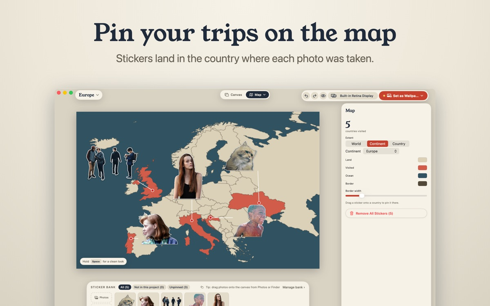

How to make a travel map wallpaper from your photos
In short: Sticta cuts the people out of your trip photos and pins each one to the country where the photo was taken. The countries you have been to light up, and the whole map becomes your Mac's desktop wallpaper.
What you end up with
A map of the world, a continent or a single country, with your travel photos stuck on it as stickers. Each sticker sits on the country where its photo was taken, visited countries are coloured in, and a counter shows how many you have been to. It is a wallpaper you actually want to look at between windows.

Pick the photos
Choose photos with the people (or pets) you travelled with. One good photo per country is plenty: the map reads better with a few big faces than with dozens of tiny ones. Photos taken on an iPhone already carry their location, which is what Sticta uses to place them.
Make the map in Sticta
- Open Sticta, create a project and choose the Travel map scene.
- Pick the world, a continent or one country.
- Drag your photos in from Photos or Finder. Sticta cuts the people out and pins each sticker to the country in the photo's location data.
- Five friends in one shot? Choose who goes on the sticker. A brush fixes any bit of the cutout you don't like.
- Drag stickers around to tidy the layout, then click Set as Wallpaper.
When a photo has no location
Some apps and messengers strip the location when they share or save a photo. Sticta then can't know where it was taken, so the sticker waits for you: drag it onto the right country and it counts as visited.
Make it fit your desktop
The editor shows where the menu bar, the Dock and desktop icons will sit, so no face ends up hidden behind them. The wallpaper is rendered at the full resolution of each display, and with Sticta Unlimited every display can show its own project, for example the world on one screen and last summer's country on the other.
Private by design
The map borders are built into the app (Natural Earth data), so no map service ever sees where you have been. Sticta never connects to the internet and your photos never leave your Mac. Privacy policy.
Free to download · Sticta Unlimited is a one-time purchase · Mac with Apple silicon, macOS 14 or later